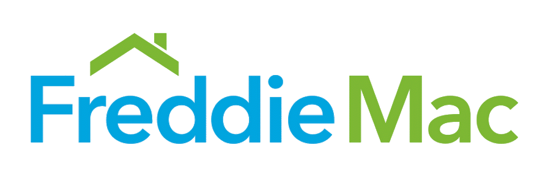

Freddie Mac
On-site · Software Developer Associate II · Aug 2025 - Present
Working on production applications with a focus on scalable backend systems, robust automation, and strong team collaboration.
💼 Let's get down to business

On-site · Software Developer Associate II · Aug 2025 - Present
Working on production applications with a focus on scalable backend systems, robust automation, and strong team collaboration.
Hybrid · Agile Developer Associate · Dec 2024 - Aug 2025
Contributed to cross-functional development efforts while applying agile practices to deliver new features and enhancements.
Hybrid · Technology Analyst - Infrastructure/Application Support Engineer · Jan 2024 - Dec 2024
Supported mission-critical systems and helped maintain application stability for enterprise services.
Remote · Software Developer Intern · Nov 2022 - May 2023